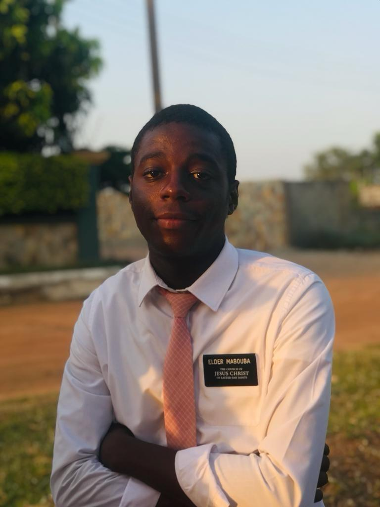

Flavien Mabouba | WDD 130
Hello my name is Flavien Mabouba, i am from Gabon, and i really like music and movies. I served a full time mission in Ghana Accra. I learned that the lord can help us in many ways even when we feel lost or depressed. I decided to further my education through BYU pathway worldwide. I have always been interested by new technologies, that is why i chose Software and development. I want to learn more about technology, especially AI. I know, if i work hard i can achieve this Goal.